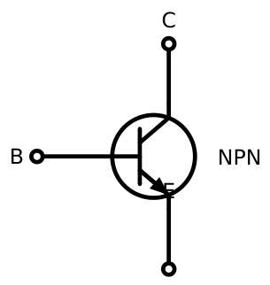
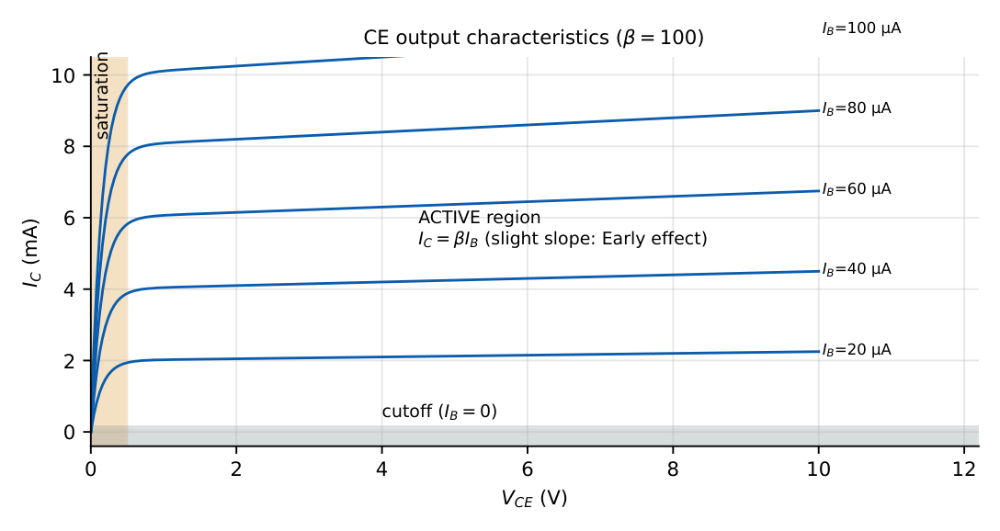
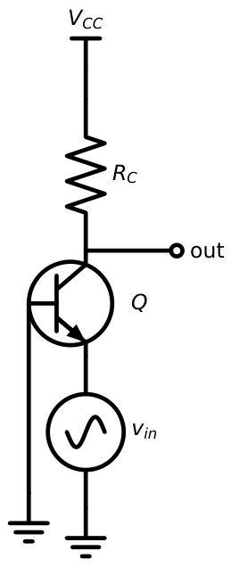
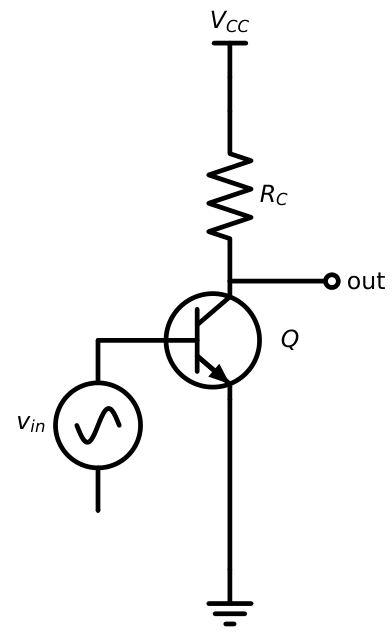
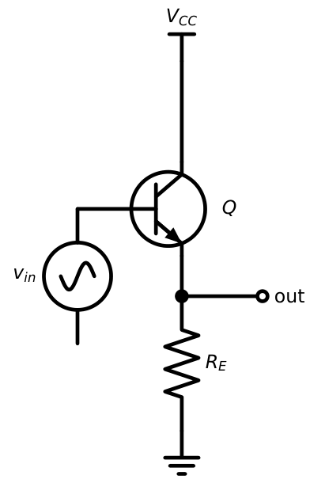
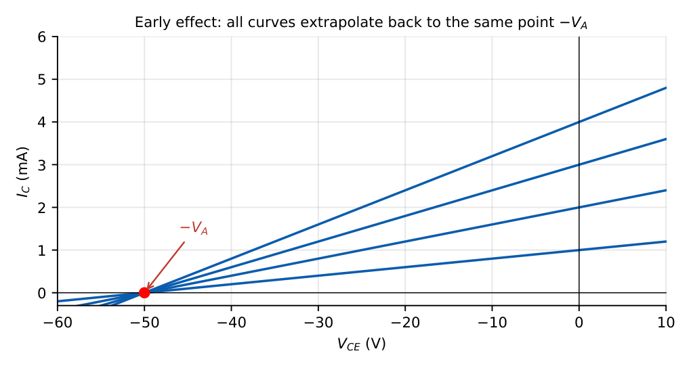
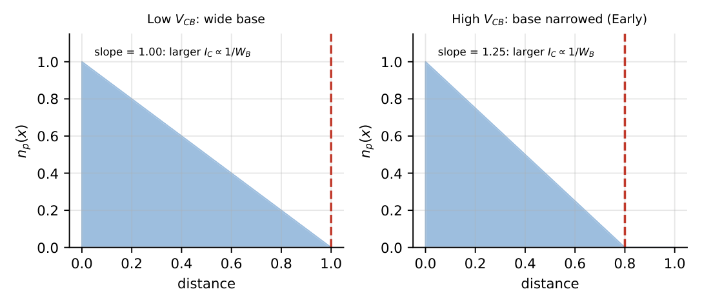

BJT Fundamentals for Amplifier Design
In this chapter
- 6.1 BJT operation
- 6.2 Active, cutoff and saturation regions
- 6.3 Common-base, common-emitter and common-collector configurations
- 6.4 BJT current relations
- 6.5 \(\alpha\), \(\beta\) and \(\gamma\) relationships
- 6.6 Transistor operating point
- 6.7 Early effect
- 6.8 Base-width modulation
- 6.9 GATE-oriented transistor analysis
6.1 BJT operation
A bipolar junction transistor is two back-to-back PN junctions sharing a thin base. In the NPN device, the emitter is heavily doped, the base is thin and lightly doped, and the collector is moderately doped and physically large.
In the forward-active mode the base–emitter junction is forward biased and the base–collector junction is reverse biased. Then:
- Electrons are injected from the emitter into the base (the dominant current).
- Most of them diffuse across the thin base without recombining.
- The reverse-biased collector junction sweeps them into the collector, producing \(I_C\).
- A small base current \(I_B\) supplies the holes lost by recombination in the base and those injected back into the emitter.

\(I_E=I_C+I_B\) \(I_C=I_S\,e^{V_{BE}/V_T}\) (active mode, neglecting Early effect)
\(V_{BE}\approx0.7\) V (Si) \(V_{CE(sat)}\approx0.2\) V
For a PNP device all polarities and current directions reverse.
6.2 Active, cutoff and saturation regions
| Region | BE junction | BC junction | Use |
|---|---|---|---|
| Cutoff | reverse (or \(<V_{on}\)) | reverse | switch OFF; \(I_C\approx0\) |
| Forward active | forward | reverse | amplifier; \(I_C=\beta I_B\) |
| Saturation | forward | forward | switch ON; \(V_{CE}\approx0.2\) V, \(I_C<\beta I_B\) |
| Reverse active | reverse | forward | rarely used; \(\beta_R\ll\beta_F\) |

To decide the region of an NPN quickly: (1) compute \(V_{BE}\); if \(<0.5\) V, it is in cutoff. (2) Otherwise assume active, find \(I_C=\beta I_B\) and \(V_{CE}\). (3) If \(V_{CE}<0.2\) V the assumption is wrong: it is in saturation, so set \(V_{CE}=0.2\) V and re-solve. In saturation \(\beta_{forced}=I_C/I_B<\beta\).
6.3 Common-base, common-emitter and common-collector configurations
The name of the configuration says which terminal is common to input and output.



| CB | CE | CC | |
|---|---|---|---|
| Input terminal | emitter | base | base |
| Output terminal | collector | collector | emitter |
| Current gain | \(\alpha\approx1\) | \(\beta\) | \(\beta+1\) |
| Voltage gain | high | high (inverting) | \(\approx1\) |
| Input impedance | very low | medium | high |
| Output impedance | very high | medium/high | low |
6.4 BJT current relations
\(I_C=\alpha I_E,\quad I_C=\beta I_B,\quad I_E=(\beta+1)I_B\)
\(\alpha=\dfrac{\beta}{\beta+1},\qquad\beta=\dfrac{\alpha}{1-\alpha}\)
Leakage: \(I_C=\beta I_B+(\beta+1)I_{CBO}=\beta I_B+I_{CEO}\), with \(I_{CEO}=(\beta+1)I_{CBO}\)
\(\beta=100\), \(I_B=20\ \mu\)A: \(I_C=2\) mA, \(I_E=2.02\) mA, \(\alpha=100/101=0.990\).
6.5 \(\alpha\), \(\beta\) and \(\gamma\) relationships
Three factors govern how good the transistor is:
- \(\gamma\) = emitter injection efficiency \(=\dfrac{I_{En}}{I_{En}+I_{Ep}}\approx1-\dfrac{D_pN_AW_B}{D_nN_DL_p}\). Heavy emitter doping makes \(\gamma\to1\).
- \(\alpha_T\) = base transport factor \(\approx1-\dfrac{W_B^2}{2L_n^2}\). A thin base makes \(\alpha_T\to1\).
- \(\alpha=\gamma\,\alpha_T\) (times a collector multiplication factor \(M\approx1\)).
Since \(\beta=\alpha/(1-\alpha)\), a small change in \(\alpha\) produces a large change in \(\beta\): \(\dfrac{\Delta\beta}{\beta}\approx(\beta+1)\dfrac{\Delta\alpha}{\alpha}\).
\(\alpha=0.98\Rightarrow\beta=49\); \(\alpha=0.99\Rightarrow\beta=99\); \(\alpha=0.995\Rightarrow\beta=199\). A change of only \(0.5\%\) in \(\alpha\) (\(0.99\to0.995\)) doubles \(\beta\).
\(I_E=5\) mA, \(\alpha=0.98\): \(I_C=4.9\) mA, \(I_B=0.1\) mA, \(\beta=49\).
6.6 Transistor operating point
The Q-point \((I_{CQ},V_{CEQ})\) is where the transistor sits with no signal. It should be placed so that the signal swing does not push the device into cutoff or saturation. For maximum symmetrical swing, place \(V_{CEQ}\) near the middle of the load line: \(V_{CEQ}\approx V_{CC}/2\) (or slightly less when there is an emitter resistor, keeping the DC load line and the AC load line in mind).
\(\beta=100\), \(V_{CC}=10\) V, \(R_C=1\) k\(\Omega\), \(V_{BE}=0.7\) V, fixed bias with \(R_B=930\) k\(\Omega\): \(I_B=(10-0.7)/930\,\mathrm k=10\ \mu\)A, \(I_C=1\) mA, \(V_{CE}=10-1=9\) V: active. Now reduce \(R_B\) to \(93\) k\(\Omega\): \(I_B=100\ \mu\)A, and \(\beta I_B=10\) mA would need \(V_{CE}<0\): the transistor saturates. \(V_{CE}=0.2\) V, \(I_C=(10-0.2)/1\,\mathrm k=9.8\) mA, forced \(\beta=98\).
6.7 Early effect
In the active region the collector current increases slightly with \(V_{CE}\): \[I_C=I_S\,e^{V_{BE}/V_T}\left(1+\frac{V_{CE}}{V_A}\right),\qquad r_o=\frac{V_A+V_{CE}}{I_C}\approx\frac{V_A}{I_C}.\] \(V_A\) (the Early voltage, typically \(50\)–\(200\) V) is the point at which the extrapolated \(I_C\)–\(V_{CE}\) lines meet the voltage axis.

\(V_A=100\) V, \(I_C=1\) mA at \(V_{CE}=2\) V (same \(V_{BE}\)). At \(V_{CE}=10\) V: \(I_C=1\times\dfrac{1+10/100}{1+2/100}=1.078\) mA. Output resistance at \(1\) mA: \(r_o=(100+2)/1=102\) k\(\Omega\).
6.8 Base-width modulation
The Early effect is caused by base-width modulation. Raising \(V_{CB}\) (reverse) widens the collector depletion region, which eats into the base and reduces the neutral base width \(W_B\). The minority-carrier gradient \(\propto1/W_B\) steepens, so \(I_C\) (and \(\beta\)) rise. In the extreme case the depletion region reaches the emitter junction: punch-through (base width vanishes).

\(V_A\propto\) base doping \(\times\) base width: a wide, heavily doped base gives a large \(V_A\) (good) but a small \(\beta\) (bad), the classic trade-off.
6.9 GATE-oriented transistor analysis
1. Write the base loop KVL to find \(I_B\) (use \(V_{BE}=0.7\)).
2. \(I_C=\beta I_B\); \(I_E=(\beta+1)I_B\).
3. Write the collector-emitter loop to get \(V_{CE}\).
4. Check \(V_{CE}>0.2\) V; if not, saturation: use \(V_{CE(sat)}\) and \(I_C=(V_{CC}-V_{CE(sat)})/R_C\) (plus \(R_E\) terms).
(1) Using \(I_E\approx I_C\) when the question asks for a base current with a small \(\beta\): keep the \((\beta+1)\). (2) Forgetting that \(V_{BE}\) is \(-0.7\) for PNP or that the PNP current flows out of the emitter. (3) Assuming the transistor is active without checking \(V_{CE}\). (4) Confusing the DC \(\beta\) (\(I_C/I_B\)) with AC \(\beta\) (\(\Delta I_C/\Delta I_B\)).
Q1. A BJT has \(\alpha=0.99\). Its \(\beta\) is .
Q2. \(I_B=25\ \mu\)A, \(\beta=80\). \(I_E\) is mA.
Q3. A transistor with \(V_A=80\) V operates at \(I_C=2\) mA and \(V_{CE}=4\) V. Its \(r_o\) (k\(\Omega\)) is .
Q4. In the fixed-bias circuit \(V_{CC}=12\) V, \(R_C=2\) k\(\Omega\), \(R_B=100\) k\(\Omega\), \(\beta=100\), \(V_{BE}=0.7\) V. The transistor is in (A) cutoff (B) active (C) saturation (D) reverse active.
Q5. Which of the following increases when base width is reduced? (A) \(\beta\) (B) \(r_o\) (C) \(V_A\) (D) punch-through voltage.
Answers: Q1: 99. Q2: \(I_C=2\) mA, \(I_E=2.025\) mA. Q3: \((80+4)/2=42\) k\(\Omega\). Q4: \(I_B=11.3/100\,\mathrm k=113\ \mu\)A, \(\beta I_B=11.3\) mA would need a \(22.6\) V drop across \(R_C\), impossible: saturation (C). Q5: (A); narrower base also lowers \(V_A\) and punch-through voltage.
- \(\beta=150\), \(I_C=3\) mA. Find \(I_B\), \(I_E\), \(\alpha\). [20 \(\mu\)A; 3.02 mA; 0.9934]
- Find \(\beta\) for \(\alpha=0.996\). [249]
- \(V_A=120\) V, \(I_C=0.5\) mA (\(V_{CE}\ll V_A\)). \(r_o=?\) [240 k\(\Omega\)]
- \(I_{CBO}=10\) nA, \(\beta=100\): \(I_{CEO}=?\) [1.01 \(\mu\)A]
- Why does \(I_{CBO}\) double roughly every \(10\,{}^\circ\)C? [It is thermally generated minority-carrier current]